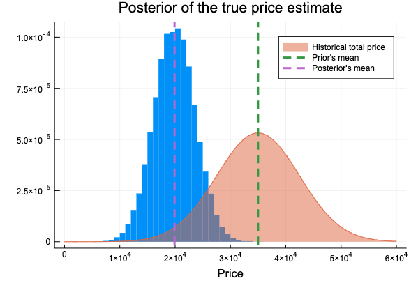

引き続き「Pythonで体験するベイズ推論」のJulia+Mambaによる実装に挑戦している。わざわざ特別Mediumに書くような題材は無いな、と思っていたのだが、第5章の「例題 : テレビ番組 “The Price Is Right”の最適化」のモデリング( pm.potential が出てくるところ)でちょっと詰まったので、Mambaでの実装について記しておく。
問題を単純化すると、
- 二つの賞品A, Bの合計価格(これを真の価格と今後呼ぶ)を予想したい
- 真の価格は正規分布 \( \text{Normal}(35000, 7500^2) \) に従うと仮定する
- 賞品A, Bの価格の事前分布はそれぞれ正規分布 \( \text{Normal}(12000, 3000^2) \) , \( \text{Normal}(3000,500^2) \) に従うと仮定する このような条件のモデリングである。
実際にモデリングをやってみて、賞品A, Bの事前分布と、その和をモデリングするところまでは下のようにすればいいので簡単であるのだが、( using 等は略した)真の価格の分布とサンプリングした賞品A, Bの価格の分布の和を結びつける段階で、はて？？？となった。
data = Dict{Symbol, Any}(
:data_mu => [3e3, 12e3],
:data_std => [5e2, 3e3],
:mu_prior => 35e3,
:std_prior => 75e2,
)
model = Model(
prize = Stochastic(1, (data_mu, data_std)
-> MvNormal(data_mu, data_std)),
price_estimate = Logical(prize -> sum(prize)),
)
モデルを下のようにしてしまうと、
model = Model(
true_price = Stochastic((mu_prior, std_prior) -> Normal(mu_prior, std_prior)),
prize = Stochastic(1, (data_mu, data_std) -> MvNormal(data_mu, data_std)),
price_estimate = Logical(prize -> sum(prize)),
)
price_estimate と true_price が結びつかないのである。
本文のコードを見てみると、 @pm.potential というデコレーターが付いた関数が使われている。(PyMC3では pm.Potential )
@pm.potential
def error(true_price=true_price, price_estimate=price_estimate):
return pm.normal_like(true_price, price_estimate, 1 / (3e3)**2)
要は毎回真の価格の分布からサンプリングされている観測値 true_price を \( \text{Normal}( \) price_estimate \(, 3000^2) \) という分布に当てはめた時の尤度を制約条件として加えるということである。
参考にした pm.potential についてのStackExchangeの質問:
What is pm.Potential in PyMC3? https://stats.stackexchange.com/questions/251280/what-is-pm-potential-in-pymc3
\
pm.Potential() much needed explanation for newbie https://discourse.pymc.io/t/pm-potential-much-needed-explanation-for-newbie/2341
Mambaに pm.potential に該当する機能が見つからなかったので、ユーザー定義の分布を定義することで制約条件を実装した。
true_price に対して計算される尤度が通常の \( \text{Normal}(\mu, \sigma^2) \) に対応する尤度と今回考えたい制約に対応する \( \text{Normal}( \) price_estimate \(, 3000^2) \) の尤度の話になるような分布にすれば良いので、
@everywhere extensions = quote
using Distributions
import Distributions: minimum, maximum, logpdf
mutable struct TruePriceDist <: ContinuousUnivariateDistribution
mu::Float64
sig::Float64
price_estimate::Float64
end
minimum(d::TruePriceDist) = -Inf
maximum(d::TruePriceDist) = Inf
function logpdf(d::TruePriceDist, x::Real)
logpdf(Normal(d.mu, d.sig), x) + logpdf(Normal(d.price_estimate, 3000), x)
end
end
@everywhere eval(extensions)
と新しく分布を定義する。こうすると logpdf が正規化されていないものになる(pdfを積分して1にならない)がMambaで使う分布としては問題は起こらない。
モデルはこの TruePriceDist を使って、
model = Model(
true_price = Stochastic(
(mu_prior, std_prior, price_estimate) ->
TruePriceDist(mu_prior, std_prior, price_estimate)
),
prize = Stochastic(1, (data_mu, data_std) -> MvNormal(data_mu, data_std)),
price_estimate = Logical(prize -> sum(prize)),
)
とすれば良い。
事後分布を確認すると、本と同様の結果がきちんと得られていた。

サンプリングの詳細、期待損失の計算や最小化に関しては下のipynb参照。